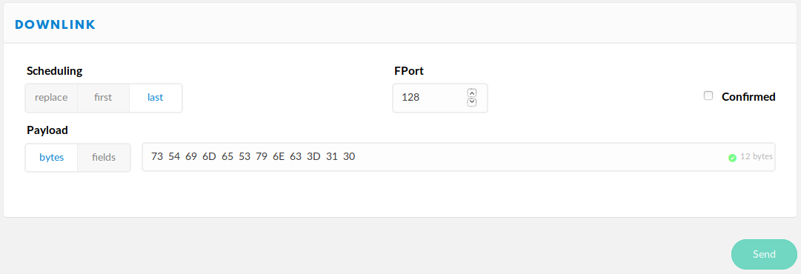

LoRaWAN
Introduction to LoRaWAN
LoRaWAN stands for Long Range Wide Area Network and is a low power wireless network protocol. It uses the wireless transmission technology LoRa, owned by Semtech Corporation. Although LoRa is a proprietary and patented, LoRaWAN can is openly specified by the LoRa Alliance and can be used freely if you have the necessary hardware. It is using publicly available frequencies to transmit its data.
Transmissions using LoRaWAN can travel distances of several kilometers and are very good at penetrating obstacles like walls. Communication using LoRaWAN does also require very little power, so you can achieve long lifetimes for battery powered devices. The trade off is a very limited data rate which makes it unusable for some use cases. For many IoT applications this is not really a limitation.
LoRaWAN based LPWANs (Low Power wide area networks) allow connections to the Internet from small battery powered devices with wireless ranges of up to 5 kilometers between the transmitter and receiving gateway antenna - without the usual cellular network costs in classical M2M or smart metering solutions. Also - unlike with cellular networks - it's possible to setup own gateways if needed.
To operate LoRaWAN Sensors you need a LoRaWAN Network Server. A free to use, open source network server is The Things Network. They provide a very good documentation about the overall architecture and features of LoRaWAN:
LoRaWAN Documentation (by TTN)
LoRa
LoRa is the modulation used in LoRaWAN. It's patented by Semtech.
To calculate LoRa specific parameters like transmit time you can use the SX1272 LoRa Calculator from Semtech.
Gateways
All LoRaWAN devices connect to a LoRaWAN Network via Gateways. Those are stationary devices that collect LoRaWAN messages from the air and forward them over the Internet to the LoRaWAN Network. You need at least one Gateway to operate a LoRaWAN device; you can either set it up yourself or use infrastructure provided by others. Lobaro does not manufacture Gateways, but we can advice you and help you acquire them, if you need support.
Network Server
The Network Server is the part of a LoRaWAN Network that coordinates Sensors and Gateways and lets you access the data your devices are uploading. There exists a free to use Network Server named The Things Network (TTN), which is a good place to start using LoRaWAN. There are even a lot of publicly available Gateways in the world that connect to TTN which you can use with your devices. Depending on your location their might also be commercial LoRaWAN Networks available that you can use.
Lobaro does not develop its own Network Server, but we can connect LoRaWAN devices to our backend via a Network Server we are operating, via TTN, or via any other LoRaWAN provider that supplies an API that we can connect to.
Uplinks and Downlinks
Messages sent by a LoRaWAN device to the Network are called Uplink, messages sent from the Network to the device are called Downlinks. For normal LoRaWAN use cases Uplinks are sent much more often then Downlinks. A Gateways is limited in the number of Downlinks it may send over time, so Network Providers tend to charge fees for Downlinks.
The situation on which Downlinks can be sent to a device are very limited. LoRaWAN has three different Operation Modes: Class A, Class B, and Class C. Devices running in the most common Operation Mode, Class A, can only receive a Downlink Message directly after they send an Uplink. This makes it possible for LoRaWAN devices to operate on very little power, because they spend most of their time in a sleeping state. As a consequence every Downlink you send to your devices will be buffered until it sends an Uplink and only then the Downlink will be transmitted. Depending on the device and it's configuration, this can take hours or days.
Operation Mode Class C gives a solution to this problem. A device operating in Class C is listening for Downlinks whenever possible, thus it is (almost) always reachable by the network. This permanent receiving prevents the device from going into a sleep mode, so devices running in Class C will consume much more power. It is not advisable to run battery powered devices in Class C.
All LoRaWAN devices support Class A. Some Lobaro devices can be changed to run in Class C by configuration. Class B is not supported by Lobaro devices at the moment.
Further Information
- TTN provide a good LoRaWAN Documentation
- The Official LoRaWAN Specification is developed and provided by the LoRa Alliance.
Lobaro LoRaWAN stack
Lobaro's LoRaWAN devices use a LoRaWAN stack we develop ourselves. It supports a wide spectrum of features:
- LoRaWAN version 1.1 and 1.0 supported
- Over The Air Activation (OTAA) and Activation By Personalisation (ABP)
- Adaptive Data Rate (ADR)
- Device integrated DevEUI (alternatively DevEUI can be freely configured)
- AES encryption
- LoRaWAN operation modes Class A and Class C
- Time synchronisation over LoRaWAN
- Remote configuration over LoRaWAN
- Remote device rebooting
- Automated reconnection on network loss
- Random delays to avoid collisions with other devices
Some devices implement only a subset of those features.
LoRaWAN versions
The most recent version of LoRaWAN is 1.1. Some Network Servers support only
version 1.0. The configuration for the two versions is slightly different:
Version 1.1 has two Keys:
The Network Key NwkKey and the Application Key AppKey. Version 1.0
only uses the Application Key.
Lobaro's LoRaWAN devices support both versions. If both keys, NwkKey and AppKey
are set, the device uses version 1.1. If NwkKey is set to all zeros, the
device uses version 1.0 instead. If both keys are set to the same value, the
device tries to use version 1.1 but falls back to 1.0 if the Network Server
does not support 1.1.
The initial configuration for Lobaro's LoRaWAN devices has both keys set to the same value, so that they can be used with both LoRaWAN versions out of the box. Each device has an individual key, but the value is known to Lobaro. For security reasons the keys should be changed to a random value generated from a strong random source.
LoRaWAN Configuration
The configuration of the LoRaWAN parameters is basically the same for all LoRaWAN devices (some of our products might differ in some details, especially devices using older firmware that do not yet support LoRaWAN 1.1).
Several values are a number of bytes, that need to be entered as hexstrings (without
0x-prefix). So e.g. the DevEUI is a value of 8 bytes encoded in hex will be
16 hexdigits long. A sample value would be 0123456789abcdef.
| Name | Description | Type | Values |
|---|---|---|---|
OTAA |
Activation: OTAA or ABP | bool |
true= use OTAA, false= use ABP |
DevEUI |
DevEUI used to identify the Device | byte[8] |
e.g. 0123456789abcdef |
JoinEUI |
Used for OTAA (called AppEUI in v1.0) | byte[8] |
e.g. 0123456789abcdef |
AppKey |
Key used for OTAA (v1.0 and v1.1) | byte[16] |
|
NwkKey |
Key used for OTAA (v1.1 only) | byte[16] |
|
SF |
Initial / maximum Spreading Factor | int |
7 - 12 |
ADR |
Use Adaptive Data Rate | bool |
true= use ADR, false= don't |
OpMode |
Operation Mode | string |
A= Class A, C= Class C |
TimeSync |
Days after which to sync time | int |
days, 0=don't sync time |
RndDelay |
Random delay before sending | int |
max seconds |
RemoteConf |
Support Remote Configuration | bool |
true=allow (default), false=deactivate |
LostReboot |
Days without downlink before reboot | int |
days, 0=don't reboot |
OTAA- A LoRaWAN device needs to be activated to communicate with a network. The activation
generates a session that is used by the device and most importantly sets the
encryption keys used for communication during the session's lifetime.
There are two ways to handle the activation. One is Activation Over The Air (OTAA), which uses shared secrets to create new session keys when the device connects to the Network (join). The other is Activation By Personalisation (ABP), where the session keys have to be communicated between the device and the Network Server previously on a channel outside of the LoRaWAN spec.
We recommend to use OTAA whenever possible, as it creates new keys on each join procedure, making it harder to break the encryption. If you need to use ABP despite this, please referre to using ABP for an explanation of how to get the keys needed. DevEUI- The DevEUI is an 8 byte value that identifies the device globally. Lobaro LoRaWAN devices contain a unique DevEUI officially purchased from a distributor. If you need to use a different DevEUI for some reason you can change it to any value you like. The original DevEUI will remain in the device and can be restored by resetting the configuration to default. It is also displayed as a log message when booting the device. The DevEUI identifies a device in the Network Server when you are using OTAA.
JoinEUI- The JoinEui is an 8 byte value that is needed during OTAA join. It often provided as a random value by the Network server. In LoRaWAN 1.0 this was called AppEUI and had a slightly different function. The AppEui for LoRaWAN 1.0 is often provided by the Network Server. If you are using 1.0 set the AppEui here.
AppKey,NwkKey- The Application Key and the Network Key are used as shared secrets during
OTAA to generate the session keys. They need to be synchronised between
the device and the Network Server. LoRaWAN 1.0 only uses the AppKey and not
the NwkKey. Setting the NwkKey to
00000000000000000000000000000000will set the device to use LoRaWAN 1.0. If you set NwkKey and AppKey to the same value, the device will try to run LoRaWAN 1.1 but fall back to 1.0 if the Network Server does not support 1.1. SF- The Spreading Factor is a LoRa parameter that defines how much time is used
to transmit a single byte. A higher Spreading Factor results in a better
reception of the transmission, but it has a severe impact on the amount
of data a device can send and on battery consumption. See
Spreading Factor for more details.
This Parameter sets the Spreading Factor the device starts with after Activation. If the device uses ADR, the Spreading Factor can change over time, but it will never be higher than the value configured here. ADR- Adaptive Data Rate (ADR) allows the Network Server to adjust the Spreading Factor
and TxPower of this device. This feature helps the Network to organise itself
when multiple devices and multiple gateways are in one area. It also helps the
device to reduce power consumption, as the Network Server can reduce the power
used by the device for transmission.
ADR works best with devices that are stationary or move only rarely. A highly mobile device will often experience sudden reductions in connectivity. This can lead to packet loss when the Data Rate is configured to be as low as possible. OpMode- LoRaWAN devices can operate in different modes. The most common Operation Mode is
Class A. In this Mode the device only listens for downlink messages for a short
period after it sent an uplink message to the network. Those devices can only be
reached when they contact the network. This is the preferred Operation Mode
for battery powered device, because it allows the device to spend most of its
time in a deep sleep state that consumes only minimal power.
The other Operation Mode supported by Lobaro is Class C. Devices in this modus listen for downlink messages whenever possible. This allows the Network to contact the device at almost any time without waiting for an incoming uplink. This Operation Mode consumes much more power and is not recommended for battery powered devices! TimeSync- When the device is connected to power it does not know what the time and
sets its internal clock to 2010-01-01T00:00:00. For many use cases it is
necessary that the device's clock is set to the correct time (for example if
the device needs to activate at a specific point in time). LoRaWAN supports
synchronising time over the air. When
TimeSyncis set to a number > 0 the device synchronises time on activation and then again and again after that number of days have passed. A regular synchronisation is useful, because the devices clock has a limited precision and might drift several seconds per month.
Not all Network Servers support time synchronisation. Some Network Servers will silently drop any message that requests a time synchronisation. This can result in packet loss. If your Network Server has this limitation, make sure you deactivate this feature.
When using multiple time synchronised devices around the same Gateway you should useRndDelayto avoid collisions. RndDelay- When multiple devices try to transmit at the same time they interfere with
each other leading to packet loss. Because the devices wake up on a specific
time those collisions can repeat for each operation cycle. An effective
feature to avoid repeating collisions is adding a random delay before
transmission.
RndDelayspecifies a maximal number of seconds that is randomly waited before the device starts uploading its data.
The delay is performed after taking measurements but before uploading, so that the measurements take place at a well defined time. RemoteConf- Our devices support changing the configuration over the air via LoRaWAN downlinks. This can be a very convenient feature for devices that are difficult to get physical access to. For security reasons this feature can be deactivated using this configuration parameter. See Remote Configuration for more information.
LostReboot- This feature allows the device to detect a disconnection from the Network and
to reboot in that case. If the device does not receive any downlinks for the
specified number of days it reboots itself in order to rejoin the network.
This only makes sense for devices using OTAA, as ABP devices do not start a new
session on boot. In combination with
TimeSyncyou can ensure downlinks on a regular basis to test connection. This feature makes it possible to move an OTAA using device from one Network to another without the need to restart it manually through physical access.
Using ABP
We recommend using OTAA for the activation of your devices, as it is more flexible
and more secure. Still there are cases were you need to use ABP. Our devices support
ABP (Activation By Personalisation). To use it, you need to set the configuration
parameter OTAA to false. The required parameters for ABP will be created
by the device. You can see them in the log after boot. The amount of keys used
for ABP differ between LoRaWAN Versions 1.0 and 1.1, so, depending on which version
you set the device to use, the output will differ:
Example for LoRaWAN v1.0:
LoRa| LoRaWAN config
LoRa| using LoRaWAN v1.0, ABP
LoRa| configuration derived from DevAddr, AppKey
LoRa| DevAddr: 0014331e (last 4 bytes of DevEUI)
LoRa| NetSKey: 02ce3eb181b2eea2cb02e8a6d237b07b
LoRa| AppSKey: e8566e3fb69d65067bf51846eff1271a
Example for LoRaWAN v1.1:
LoRa| LoRaWAN config
LoRa| using LoRaWAN v1.1, ABP
LoRa| configuration derived from DevAddr, NwkKey, AppKey
LoRa| DevAddr: 0014331e (last 4 bytes of DevEUI)
LoRa| change AppKey and NwkKey to generate different Keys
LoRa| NwkSEncKey: 12bf6aac2faba7b74160d1223eb44fd1
LoRa| SNwkSIntKey: 0f4edac1f38b2a52389c4dd42fa65330
LoRa| FNwkSIntKey: db264cf386c242caba4f842cb014947b
LoRa| AppSKey: 3256663fb79d65067bf51646eff0271a
You can copy the device address and session keys from the log and put them into your Network Server's configuration. The device address is generated using the last 4 bytes of the DevEUI, so if you want to change the Address you will have to change the DevEUI in the configuration. The Session Keys are derived from the OTAA keys in the configuration, so if you want to generate different session keys, you should set the AppKey (for v1.0) or the AppKey and NwkKey (for v1.1) to a randomly generated value.
Duty Cycle
Because LoRaWAN uses public frequencies, there are some regulations LoRaWAN device must comply to. Radio transmissions are subject to local legislation; the information in this chapter are referring to EU regulations. Other areas have similar regulations but they will differ in detail.
Devices that use public frequencies must respect a duty cycle for transmissions: a device must not transmit more than 1% of the time on a certain band. So after 1 second of transmission the device must not use that band for at least 99 seconds. So if a device has a lot of data to upload, it will be forced into waiting after the first few uploads. Our devices will go to a very power effective sleep mode when they are forced to wait. When using LoRa modulation, the Spreading Factor used has a severe impact how much data can be uploaded in a fixed amount of time. See next chapter Spreading Factor for more details.
Spreading Factor
The Spreading Factor (SF) is a parameter of LoRa ranging from 7 to 12, that defines how much transmission time is used to transmit a single byte. Using a higher spreading factor results in a higher possibility to get a message transmitted successfully. The trade off is, that it takes a longer time to transmit, which leads to a higher power consumption, more collisions between devices, and much smaller data throughput for the device because of the duty cycle. Increasing the spreading factor by one doubles the amount of time it takes to transmit data and therefore halves the amount of data that can be transmitted. A higher spreading factor also leads to a stricter size limitation for messages. On SF 7 a single message can carry a payload of up to 222 bytes, on SF 12 only 51 bytes are allowed. It is therefore advisable to use the lowest possible spreading factor for your devises. Tuning this by hand is a difficult task, but there is a mechanism called Adaptive Data Rate (ADR) that does this for you.
Enabling ADR in your device allows the Network Server to change the Spreading Factor of your device according to the reception quality. The SF will never be set higher than the starting value you configure in your device. Most of our devices are configured to use ADR and to start at a SF of 12. This gives the Network Server full flexibility in organising all attached devices and should result in the optimal configuration. It gives the network the ability to adapt to changes, like an increase of the number of deployed devices, or to the installation of additional gateways (or a gateway stopping to work).
Timestamp
Many of our devices include timestamps somewhere in their payloads. The encoding of timestamps in our payload is the same in all our LoRaWAN devices except some of our oldest. There are some details you should be aware of.
- Format: Points in time are represented as UNIX-timestamps within our products. That is a integer value indicating the number of seconds that have passed since 0:00h on January 1 1970 in UTC.
- Encoding: We encode the UNIX-timestamp in a signed 40 bit big endian integer (
int40, 5 bytes long). The 40 bit integer is unconventional but used with good reasoning. UNIX-timestamps have traditionally been stored as signed 32 bit integers (int32). This poses the problem that points in time later than January 2038 cannot be expressed. A simple solution to this is switching to store timestamps in singed 64 bit integers. This is a suitable solution for modern computers and our devices do that internally for calculations. The problem is that 64 bit integers take 8 bytes of space, and with LoRaWAN every byte is precious. 3 of those 8 bytes will be zeros for thousands of years to come, so we chose to increase the size of our timestamps by only a single byte to 40 bit. This lets us store timestamps up unto the year 19391, which we dare say is enough.
Storing numerical values with a number of bits that is not a power of 2 might be unusual, but there is nothing wrong with it. If you have problems decoding 40 bit values you can find an example implementation in JavaScript below in our example TTN parser. - Device's internal clock: The timestamp uploaded by the devices is always referring to the
device's internal clock. That clock is not always in sync with actual time. In fact when you
power up the device it has no way to know what time it is. It sets the internal clock to
2010-01-01T00:00:00. For many applications this is not a problem! If you set the device's cron to execute at 0h, 6h, 12h, and 18h it will activate every 6 hours at the same times every day. But when exactly the device is activated depends on the the time it was first powered on.
If you require your device to run in sync with actual time you can set its clock using the configuration adapter and the Lobaro Tool. LoRaWAN 1.1 also introduced time synchronization over the air which is supported by some of our devices. You will need to use a LoRaWAN Network Server that also supports this feature.
Remote Configuration
IoT devices are often installed at places that are difficult to reach. If you need to change the settings of such a device it is often not easily possible to get physical access to attach a config adapter.
Many of our devices support Remote Configuration that allows you to change the configuration of the device by sending Downlink messages via LoRaWAN.
The Remote Configuration must be enabled in the device by setting the parameter
RemoteConf to true. If this is set to false, none of the remote commands described
here will work, and you can only activate it with physical access to the device. This is
meant as a security feature if you want to make sure that your device will not be controlled
over the network.
If you are using Remote Configuration, please be aware that LoRaWAN devices can only be reached by the network under certain conditions. See Uplinks and Downlinks.
Lobaro LoRaWAN devices receive remote configuration commands as Downlinks on port 128. Responses to those commands will be sent as Uplinks on port 128 (and 129-131 for long responses). The remote commands and their responses are all encoded in ASCII, to make it easier for humans to use them.
The first byte of a Downlink message on port 128 contains a single character that identifies the command you want to send. Some commands take a parameter following the command char.
The responses to a command start with the same character as the command followed by an optional parameter.
If a command is unknown or it fails for some reason, an error response is sent via Uplink that
contains with a ! followed by a readable error message.
Changing configuration does nothing until you save the changes and reboot the device. The device has a safety feature that prevents configurations that make the device unusable. A new configuration is tested in the first run after rebooting. Only after the device reaches a stable state will the configuration be adopted and used permanently. If a problem occurs the device will restore its last stable connection and reboot. If the device uses OTAA (which we recommend) the device will only adopt the new configuration only after a join request is accepted, to make sure the LoRaWAN parameters are correct. After a few failed attempts it will restore the previous configuration. This can take up to about 10 minutes.
| Char | Command | Parameter | Hex |
|---|---|---|---|
? |
Request firmware and version | None | 3F |
g |
Get config parameter value | Name of parameter | 67 |
r |
Reset config parameter value | Name of parameter | 72 |
s |
Set config parameter value | <name>=<value> |
73 |
S |
Set cfg parm, save, reboot | <name>=<value> |
53 |
a |
Append to config parameter value | <name>=<value> |
61 |
b |
Reboot device without saving | None | 62 |
w |
Save config and reboot device | None | 77 |
?- Request firmware and version. This command triggers the device to send what firmware it is running and in which version. This can be used to test if the remote configuration is working.
g<name>- Get the value of the config parameter
<name>. This command makes the device sent a response containing<name>=<value>as parameter giving you the current value of a configuration parameter. r<name>/r*- Reset config parameter
<name>to its default value. As a confirmation the device sends a response containing<name>=<value>, reporting the new value of the parameter.
Sending the special value*will reset all config parameters. s<name>=<value>- Set config parameter
<name>to<value>. Sets the parameter to the value given in the parameter. As a confirmation it sends a response containing<name>=<value>, reporting the new value of the parameter. S<name>=<value>- Set config parameter
<name>to<value>. Sets the parameter to the value given in the parameter, saves the changes to the temporary config and reboots. It combines usingsfollowed byw. This commands was added as a convenience feature to update a single config value using a single downlink (CommandSwas added to Lobaro LoRaWAN Stack in version 1.1.0 on 2020-04-02). a<name>=<value>- Append
<value>to the config parameter<name>. This command appends the value given to the current value of the parameter. This is intended to allow setting values that are too long for a single Downlink message. As a confirmation it sends the length of the config parameter's value after the appending. Append works for config paramters of typestring. b- Reboot device without saving. This command restarts the device. Any changes too the config that have been committed before will be lost! This command does not send a Response.
w/wFORCE- Save config and reboot device. This command saves all configuration changes to a temporarily
configuration and restarts the device. Only if the device boots successfully and reaches normal
operation mode is the new configuration made permanent. If any fatal configuration error
occurs or if the LoRaWAN OTAA Join does not succeed, the previous configuration will be
restored and the device restarted again.
This command does not send a Response.
If you add the special argumentFORCEto the command, the configuration will be made permanent without testing the configuration.
Using wFORCE can leave your device useless and unreachable!
Do not use wFORCE unless you have a very good reason. If the device is set to an
invalid configuration it will no longer be reachable by the Network Server. From such
a state it can only be recovered with physical access and a config adapter. It will
also most likely drain the battery quickly.
Example: changing configuration
The following is a short example of how you can update two configuration values remotely (that includes rebooting the device).
Most LoRaWAN devices (all that are running in Class A, which are by fast the most) can only be reached when they contact the network. Network Servers (like The Things Network) provide a mechanism to enqueue messages for a specific device. The messages will be sent as downlink the next time that device contacts the network. Normally, multiple messages can be enqueued and will all be transmitted as soon as possible. Please be advised that the gateways communicating with your device must respect their duty cycle, so there is a very limited amount of downlinks that can be sent for a given time (downlinks are expensive).
For this example we want to set Time Synchronisation to sync the internal clock every 10 days, and we want to deactivate Adaptive Date Rate (ADR). These are both LoRaWAN configuration parameters that are present on most devices (find details under LoRaWAN Configuration), but you can of course also change parameters specific to your device, e.g. Modbus configuration or wMBus configuration, with this feature.
We will need to send three commands:
sTimeSync=10– set time synchronisation to 10 day intervalsADR=false– disable adaptive data ratew– write changes to device configuration and reboot
The s-commands will of course differ for your case, but the w command at the end will be the same.
After sending the final command, the device will reboot and try the new configuration. If the boot process and
the connection to the network are successful, the device will make the changes permanent. If there is a problem
(if you accidentally set an invalid value, e.g. sADR=flase or if you changed your AppKey to wrong value and your
OTAA fails), the device will revert to the previous configuration.
Downlinks on TTN
How you sent your downlinks depends on the LoRaWAN Network Server you use to connect your devices. You will most likely need to convert the commands (that are all ASCII) to some different representation, e.g. Hex or Base64.
In The Things Network you find the downlink panel on the "Device Overview" page for each device, directly below the panel that shows you OTAA/ABP information (DevEUI, AppKey, ...). It is shown in the following screenshot:

You will have to encode the commands in hex. In the screenshot you see 73 54 69 6d 65 53 79 6e 63 3d 31 30 as
the message to send; that is the hex representation of sTimeSync=10. The Port used for remote configuration for
our devices is 128. When you enter multiple messages to send, be sure to set the correct scheduling (last).
The preselected replace will overwrite your previously enqueued messages.
Parser
LoRaWAN Application Servers need to decode sensor payloads. This is done with custom parser code. We provide TTN compatible JavaScript parsers as reference implementation for all our devices.
Some common help functions for this parsers can be found in the following example:
function toHexString(byteArray) {
var s = '';
byteArray.forEach(function (byte) {
s += ('0' + (byte & 0xFF).toString(16)).slice(-2);
});
return s;
}
function signed(val, bits) {
if ((val & 1 << (bits - 1)) > 0) { // value is negative (16bit 2's complement)
var mask = Math.pow(2, bits) - 1;
val = (~val & mask) + 1; // invert all bits & add 1 => now positive value
val = val * -1;
}
return val;
}
function int16_BE(bytes, idx) {
bytes = bytes.slice(idx || 0);
return signed(bytes[0] << 8 | bytes[1] << 0, 16);
}
function int24_BE(bytes, idx) {
bytes = bytes.slice(idx || 0);
return signed(bytes[0] << 16 | bytes[1] << 8 | bytes[2] << 0, 24);
}
function int32_BE(bytes, idx) {
bytes = bytes.slice(idx || 0);
return signed(bytes[0] << 24 | bytes[1] << 16 | bytes[2] << 8 | bytes[3] << 0, 32);
}
function int40_BE(bytes, idx) {
bytes = bytes.slice(idx || 0);
return signed(bytes[0] << 32 | bytes[1] << 24 | bytes[2] << 16 | bytes[3] << 8 | bytes[4] << 0, 40);
}
function int16_LE(bytes, idx) {
bytes = bytes.slice(idx || 0);
return signed(bytes[1] << 8 | bytes[0] << 0, 16);
}
function int24_LE(bytes, idx) {
bytes = bytes.slice(idx || 0);
return signed(bytes[2] << 16 | bytes[1] << 8 | bytes[0] << 0, 24);
}
function int32_LE(bytes, idx) {
bytes = bytes.slice(idx || 0);
return signed(bytes[3] << 24 | bytes[2] << 16 | bytes[1] << 8 | bytes[0] << 0, 32);
}
function int64_LE(bytes, idx) {
bytes = bytes.slice(idx || 0);
return signed(
bytes[7] << 56 | bytes[6] << 48 | bytes[5] << 40 | bytes[4] << 32 |
bytes[3] << 24 | bytes[2] << 16 | bytes[1] << 8 | bytes[0] << 0, 32);
}
// float32([62, 132, 168, 155]) = 0.305068
function float32(bytes, idx) {
bytes = bytes.slice(idx || 0);
bytes = int32_BE(bytes, 0)
var sign = (bytes & 0x80000000) ? -1 : 1;
var exponent = ((bytes >> 23) & 0xFF) - 127;
var significand = (bytes & ~(-1 << 23));
if (exponent == 128)
return sign * ((significand) ? Number.NaN : Number.POSITIVE_INFINITY);
if (exponent == -127) {
if (significand == 0) return sign * 0.0;
exponent = -126;
significand /= (1 << 22);
} else significand = (significand | (1 << 23)) / (1 << 23);
return sign * significand * Math.pow(2, exponent);
}
function toNumber(bytes) {
var res = 0;
for (var i = 0, s = 0; i < bytes.length; i++) {
res |= bytes[i] << s;
s += 8;
}
return res;
}
function bit(byte, idx) {
return (byte & (0x01 << idx)) != 0;
}
function readVersion(bytes, idx) {
bytes = bytes.slice(idx || 0);
return "v" + bytes[0] + "." + bytes[1] + "." + bytes[2];
}
// EXAMPLE PARSER:
// 0001000566566D38000000000600E600EA0C02400040E740C7
// 00 01 00 05 66 56 6D 38 00 00 00 00 06 00 E6 00 EA 0C 02 400040E740C7
/*
Alarm
----------
reason: Button 2 (5)
sensorTime: 946689638
vBat: 3306
temperature: 230
mems: <64,-6336,-14528>
button1State: 0
button2State: 1
alarmAgeSec: 6
*/
// Decoder function for TTN
function Decoder(bytes, port) {
// Decode an uplink message from a buffer
// (array) of bytes to an object of fields.
var decoded = {
"version": readVersion(bytes, 0),
"reason": bytes[3],
"sensorTime": int64_LE(bytes, 4),
"alarmAgeSec": int16_LE(bytes, 12),
"temperature": int16_LE(bytes, 14) / 10,
"vBat": int16_LE(bytes, 16) / 1000,
"button1State": bit(bytes[18], 0),
"button2State": bit(bytes[18], 1),
"memsX": int16_LE(bytes, 19),
"memsY": int16_LE(bytes, 21),
"memsZ": int16_LE(bytes, 23),
};
// if (port === 1) decoded.led = bytes[0];
return decoded;
}
// Wrapper for Lobaro Platform
function Parse(input) {
// Decode an incoming message to an object of fields.
var b = bytes(atob(input.data));
var decoded = Decoder(b, input.fPort);
return decoded;
}
// Wrapper for Loraserver / ChirpStack
function Decode(fPort, bytes) {
return Decoder(bytes, fPort);
}
// Wrapper for Digimondo niota.io
// Uncomment only when used in niota!
/*
module.exports = function (payload, meta) {
const port = meta.lora.fport;
const buf = Buffer.from(payload, 'hex');
return Decoder(buf, port);
}*/